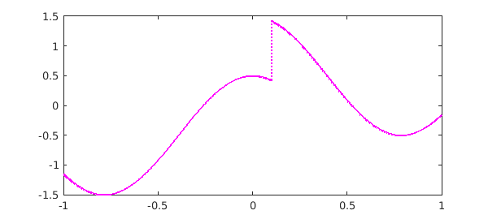
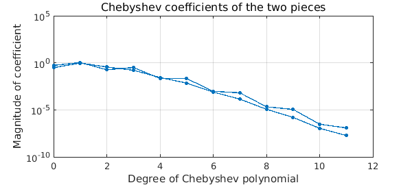
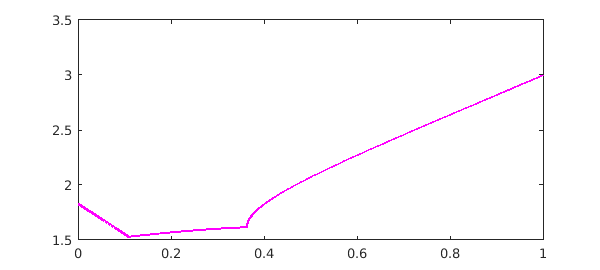

Chebfun user Tyler Jones has raised the question of how one can construct a chebfun for a noisy function with discontinuities, so that breakpoints are needed. Here we illustrate how this can be done.
1. An elementary noisy function with a jump
First let's take a function we know explicitly:
$$ f(x) = \hbox{sign}(x-0.1)/2 + \cos(4x) + \hbox{white noise of scale 1e-8} . $$
Here is an anonymous function that samples $f$:
rng('default'); rng(0)
ff = @(x) sign(x-0.1)/2 + cos(4*x) + 1e-8*randn(size(x));
We can make a chebfun like this, with "splitting on":
f = chebfun(ff, 'splitting', 'on', 'eps',1e-8); LW = 'LineWidth'; MS = 'MarkerSize'; FS = 'FontSize'; plot(f, 'm', LW, 1.6)

The command plotcoeffs shows that each piece has been resolved to about 8 digits:
plotcoeffs(f, '.-', LW, 1, MS, 14)
title('Chebyshev coefficients of the two pieces',FS,12)

The command f.ends shows the breakpoint that has been introduced:
f.ends
ans = -1.000000000000000 0.100000000000000 1.000000000000000
2. A noisy function obtained from linear algebra
Now let's cook up a function that we don't know explicitly, the spectral radius of a linear combination of two matrices $A$ and $B$. Here are the matrices
A = [1 2 0; 0 2 1; 1 0 2] B = [1 1 0; 1 -1 1; -1 1 1]
A =
1 2 0
0 2 1
1 0 2
B =
1 1 0
1 -1 1
-1 1 1
Here is the function that computes the spectral radius, with noise:
gg = @(t) max(abs(eig(t*A + (1-t)*B))) + 1e-8*randn;
We can make a chebfun again with "splitting on":
g = chebfun(gg, [0 1], 'splitting', 'on', 'eps', 1e-8, 'vectorize'); plot(g, 'm', LW, 1.6)

The figure leads us to expect two breakpoints, but in fact there are more:
g.ends'
ans =
0
0.108127100966457
0.362698596130861
0.362698596131093
0.362698596131870
0.362698596140529
0.362698596145361
0.362698596163837
0.362698596172697
0.362698596177850
0.362698596184712
0.362698596277813
0.362698596291187
0.362698596314367
0.362701027411332
0.362703458508297
0.362708320725407
0.362718045173002
0.362737494068190
0.362776391858568
0.362854187439323
0.363009778600833
0.363320960923853
0.363943325569893
0.365188054861973
0.367677513446132
0.372656430614452
0.382614265044191
0.402529933903671
0.442361271634645
0.522023947105454
0.681349298065546
1.000000000000000
plotcoeffs confirms that there are more than three pieces:
plotcoeffs(g, '.-', LW, 1, MS, 10)
title('Chebyshev coefficients',FS,12)
The explanation is that this function happens to have a square root singularity, and Chebfun has introduced additional breakpoints to resolve it.